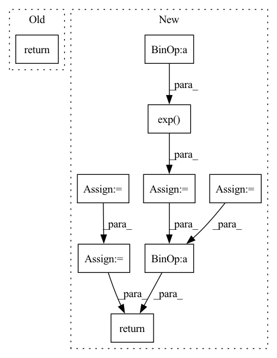

Pattern ID :9516

Before Change
def input_embed(ctx: Context, inp: jnp.ndarray) -> jnp.ndarray:
ctx = ctx.add_to_prefix("input_embed")
spec = base_spec(inp)
return jnp.einsum(f"{spec}x,xyz->{spec}yz", one_hot(inp, ctx.data.vocab_size),
get_param(ctx, "weight", [ctx.dims.vocab, ctx.dims.heads, ctx.dims.features_per_head],
ctx.embedding_std))
After Change
ctx = ctx.add_to_prefix("input_embed")
spec = base_spec(inp)
embd = get_param(ctx, "weight", [ctx.dims.vocab, ctx.dims.heads, ctx.dims.features_per_head], ctx.embedding_std)
out = jnp.einsum(f"{spec}x,xyz->{spec}yz", one_hot(inp, ctx.data.vocab_size), embd)
position_shape = dims_to_shape(ctx, [ctx.dims.sequence])
feature_shape = dims_to_shape(ctx, [ctx.dims.heads, ctx.dims.features_per_head])
position_count = util.prod(position_shape)
feature_count = util.prod(feature_shape)
positions = jnp.reshape(jnp.arange(0, position_shape), (-1, 1, 1))
features = jnp.arange(0, feature_count)
features = jnp.reshape(features, [1] + feature_shape) * 4 / feature_count
features = jnp.exp(features - math.log(position_count / 2 / math.pi))
return out + jnp.sin(features * positions)
def output_embed(ctx: Context, inp: jnp.ndarray) -> jnp.ndarray:
In pattern: SUPERPATTERN
Frequency: 4
Non-data size: 9
Instances
Fragment ID: 33957255
Project Name: homebrewnlp/olmax
Commit Name: e36a0fd09a8811ec71213205ebfb684ba66a6b83
Time: 2021-07-20
Author: 39779310+ClashLuke@users.noreply.github.com
File Name: model.py
M Class Name: AnonimousClass
N Class Name: AnonimousClass
M Method Name: input_embed(2)
N Method Name: input_embed(2)
M Parent Class:
N Parent Class:
M File Name: model.py
N File Name: model.py
M Start Line: 101
M End Line: 105
N Start Line: 102
N End Line: 116
'>
Before Change
trans_loss_t, domain_acc_t = self._single_domain_forward(g_t, f_t, domain=0)
self.grl.step()
self.domain_discriminator_accuracy = 0.5 * (domain_acc_s + domain_acc_t)
return 0.5 * (trans_loss_s + trans_loss_t)
def _single_domain_forward(self, logits, features, domain=1):
Perform forward on a single domain.
After Change
f = torch.cat((f_s, f_t), dim=0)
g = torch.cat((g_s, g_t), dim=0)
g = F.softmax(g,dim=1).detach()
h = self.grl(self.map(f, g))
d = self.domain_discriminator(h)
d_label = torch.cat((
torch.ones((g_s.size(0), 1)).to(g_s.device),
torch.zeros((g_t.size(0), 1)).to(g_t.device),
))
weight = 1.0 + torch.exp(-entropy(g))
batch_size = f.size(0)
weight = weight / torch.sum(weight) * batch_size
self.domain_discriminator_accuracy = binary_accuracy(d, d_label)
return self.bce(d, d_label, weight.view_as(d))
class RandomizedMultiLinearMap(nn.Module):
'>
Fragment ID: 33957335
Project Name: thuml/transfer-learning-library
Commit Name: 6dfc8e293ca2cbc4d116dc8ed0a6ef176dff0d06
Time: 2020-04-12
Author: 13126830206@163.com
File Name: dalib/adaptation/cdan.py
M Class Name: ConditionalDomainAdversarialLoss
N Class Name: ConditionalDomainAdversarialLoss
M Method Name: forward(5)
N Method Name: forward(5)
M Parent Class: nn.Module
N Parent Class: nn.Module
M File Name: dalib/adaptation/cdan.py
N File Name: dalib/adaptation/cdan.py
M Start Line: 86
M End Line: 90
N Start Line: 87
N End Line: 100
'>
Before Change
trans_loss_t, domain_acc_t = self._single_domain_forward(g_t, f_t, domain=0)
self.grl.step()
self.domain_discriminator_accuracy = 0.5 * (domain_acc_s + domain_acc_t)
return 0.5 * (trans_loss_s + trans_loss_t)
def _single_domain_forward(self, logits, features, domain=1):
Perform forward on a single domain.
After Change
f = torch.cat((f_s, f_t), dim=0)
g = torch.cat((g_s, g_t), dim=0)
g = F.softmax(g,dim=1).detach()
h = self.grl(self.map(f, g))
d = self.domain_discriminator(h)
d_label = torch.cat((
torch.ones((g_s.size(0), 1)).to(g_s.device),
torch.zeros((g_t.size(0), 1)).to(g_t.device),
))
weight = 1.0 + torch.exp(-entropy(g))
batch_size = f.size(0)
weight = weight / torch.sum(weight) * batch_size
self.domain_discriminator_accuracy = binary_accuracy(d, d_label)
return self.bce(d, d_label, weight.view_as(d))
class RandomizedMultiLinearMap(nn.Module):
'>
Fragment ID: 33957320
Project Name: thuml/transfer-learning-library
Commit Name: 8477111b23336e7dd2d349a4b35b969240ff5871
Time: 2020-04-12
Author: 13126830206@163.com
File Name: dalib/adaptation/cdan.py
M Class Name: ConditionalDomainAdversarialLoss
N Class Name: ConditionalDomainAdversarialLoss
M Method Name: forward(5)
N Method Name: forward(5)
M Parent Class: nn.Module
N Parent Class: nn.Module
M File Name: dalib/adaptation/cdan.py
N File Name: dalib/adaptation/cdan.py
M Start Line: 86
M End Line: 90
N Start Line: 87
N End Line: 100